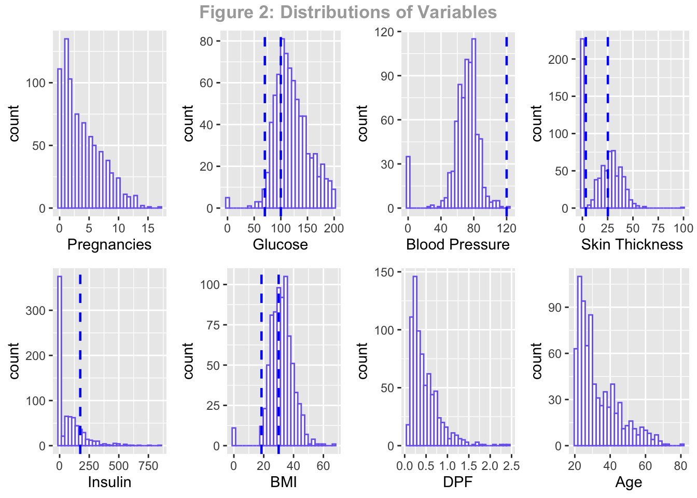

Diabetes
library(dplyr)
library(kableExtra)
library(ggplot2)
library(corrplot)diabetes <- read.csv("diabetes.csv")variable_name <- c("Pregnancies","Glucose","BloodPressure","SkinThickness","Insulin", "BMI","DiabetesPedigreeFunction","Age", "Outcome")
description <- c("To express the Number of pregnancies","To express the Glucose level in blood","To express the Blood pressure measurement","To express the thickness of the skin","To express the Insulin level in blood","To express the Body mass index","To express the Diabetes percentage","To express the age","To express the final result 1 is Yes and 0 is No")
variable_data <- data.frame(variable_name,description)
kable(variable_data,caption = "Table 1: Data Dictionary",col.names = c("Variable Name","Description"))%>% kable_styling(latex_option = c("hold_position"), position = "left")| Variable Name | Description |
|---|---|
| Pregnancies | To express the Number of pregnancies |
| Glucose | To express the Glucose level in blood |
| BloodPressure | To express the Blood pressure measurement |
| SkinThickness | To express the thickness of the skin |
| Insulin | To express the Insulin level in blood |
| BMI | To express the Body mass index |
| DiabetesPedigreeFunction | To express the Diabetes percentage |
| Age | To express the age |
| Outcome | To express the final result 1 is Yes and 0 is No |
kable(head(select(diabetes,Pregnancies,Glucose,BloodPressure,SkinThickness,Insulin, BMI,DiabetesPedigreeFunction,Age, Outcome),9),caption = "Table 1: Raw Data") %>%
kable_styling(latex_option = c("hold_position"), position = "left")| Pregnancies | Glucose | BloodPressure | SkinThickness | Insulin | BMI | DiabetesPedigreeFunction | Age | Outcome |
|---|---|---|---|---|---|---|---|---|
| 6 | 148 | 72 | 35 | 0 | 33.6 | 0.627 | 50 | 1 |
| 1 | 85 | 66 | 29 | 0 | 26.6 | 0.351 | 31 | 0 |
| 8 | 183 | 64 | 0 | 0 | 23.3 | 0.672 | 32 | 1 |
| 1 | 89 | 66 | 23 | 94 | 28.1 | 0.167 | 21 | 0 |
| 0 | 137 | 40 | 35 | 168 | 43.1 | 2.288 | 33 | 1 |
| 5 | 116 | 74 | 0 | 0 | 25.6 | 0.201 | 30 | 0 |
| 3 | 78 | 50 | 32 | 88 | 31.0 | 0.248 | 26 | 1 |
| 10 | 115 | 0 | 0 | 0 | 35.3 | 0.134 | 29 | 0 |
| 2 | 197 | 70 | 45 | 543 | 30.5 | 0.158 | 53 | 1 |
diabetes$Outcome <-factor(diabetes$Outcome)p1 <- ggplot(diabetes,aes(x= Outcome, y=Pregnancies,color=Outcome)) + geom_boxplot()+labs(x="")+scale_color_manual(labels = c("Normal", "Diabetes"), values = c("#DC9FB4", "purple"))+theme(axis.title.y = element_text(size=8))+
theme_minimal()
p2 <- ggplot(diabetes,aes(x= Outcome, y=Glucose,color=Outcome)) + geom_boxplot()+labs(x="")+scale_color_manual(labels = c("Normal", "Diabetes"), values = c("#DC9FB4", "purple"))+theme(axis.title.y = element_text(size=8))+
theme_minimal()
p3 <- ggplot(diabetes,aes(x= Outcome, y=BloodPressure,color=Outcome)) + geom_boxplot()+labs(x="")+scale_color_manual(labels = c("Normal", "Diabetes"), values = c("#DC9FB4", "purple"))+theme(axis.title.y = element_text(size=8))+
theme_minimal()
p4 <- ggplot(diabetes,aes(x= Outcome, y=SkinThickness,color=Outcome)) + geom_boxplot()+labs(x="")+scale_color_manual(labels = c("Normal", "Diabetes"), values = c("#DC9FB4", "purple"))+theme(axis.title.y = element_text(size=8))+
theme_minimal()
p5 <- ggplot(diabetes,aes(x= Outcome, y=Insulin,color=Outcome)) + geom_boxplot()+labs(x="")+scale_color_manual(labels = c("Normal", "Diabetes"), values = c("#DC9FB4", "purple"))+theme(axis.title.y = element_text(size=8))+
theme_minimal()
p6 <- ggplot(diabetes,aes(x= Outcome, y=BMI,color=Outcome)) + geom_boxplot()+labs(x="")+scale_color_manual(labels = c("Normal", "Diabetes"), values = c("#DC9FB4", "purple"))+theme(axis.title.y = element_text(size=8))+
theme_minimal()
p7 <- ggplot(diabetes,aes(x= Outcome, y=DiabetesPedigreeFunction,color=Outcome)) + geom_boxplot()+labs(x="")+scale_color_manual(labels = c("Normal", "Diabetes"), values = c("#DC9FB4", "purple"))+theme(axis.title.y = element_text(size=8))+
theme_minimal()
p8 <- ggplot(diabetes,aes(x= Outcome, y=Age,color=Outcome)) + geom_boxplot()+labs(x="")+scale_color_manual(labels = c("Normal", "Diabetes"), values = c("#DC9FB4", "purple"))+theme(axis.title.y = element_text(size=8))+
theme_minimal()p <- ggpubr::ggarrange(p1, p2,p3,p4,p5,p6,p7,p8, ncol=4,nrow = 2,common.legend = TRUE)
ggpubr::annotate_figure(p, top = ggpubr::text_grob("Figure 1: Distributions of Variables Among Each Group", color = "#0F2540",face = "bold", size = 15))
v1 <- ggplot(diabetes, aes(x=Outcome, y=Pregnancies,fill=Outcome)) +
geom_violin()+labs(x="")+scale_fill_manual(labels = c("Normal", "Diabetes"), values = c("mistyrose", "plum3"))+theme_minimal()
v2 <- ggplot(diabetes, aes(x=Outcome, y=Glucose,color=Outcome)) +
geom_violin()+labs(x="")+scale_color_manual(labels = c("Normal", "Diabetes"), values = c("#DC9FB4", "purple"))+theme_minimal()
v3 <- ggplot(diabetes, aes(x=Outcome, y=BloodPressure,color=Outcome)) +
geom_violin()+labs(x="")+scale_color_manual(labels = c("Normal", "Diabetes"), values = c("#DC9FB4", "purple"))+theme_minimal()
v4 <- ggplot(diabetes, aes(x=Outcome, y=SkinThickness,color=Outcome)) +
geom_violin()+labs(x="")+scale_color_manual(labels = c("Normal", "Diabetes"), values = c("#DC9FB4", "purple"))+theme_minimal()
v5 <- ggplot(diabetes, aes(x=Outcome, y=Insulin,color=Outcome)) +
geom_violin()+labs(x="")+scale_color_manual(labels = c("Normal", "Diabetes"), values = c("#DC9FB4", "purple"))+theme_minimal()
v6 <- ggplot(diabetes, aes(x=Outcome, y=BMI,color=Outcome)) +
geom_violin()+labs(x="")+scale_color_manual(labels = c("Normal", "Diabetes"), values = c("#DC9FB4", "purple"))+theme_minimal()
v7 <- ggplot(diabetes, aes(x=Outcome, y=DiabetesPedigreeFunction,color=Outcome)) +
geom_violin()+labs(x="")+scale_color_manual(labels = c("Normal", "Diabetes"), values = c("#DC9FB4", "purple"))+theme_minimal()
v8 <- ggplot(diabetes, aes(x=Outcome, y=Age,color=Outcome)) +
geom_violin()+labs(x="")+scale_color_manual(labels = c("Normal", "Diabetes"), values = c("#DC9FB4", "purple"))+theme_minimal()v <- ggpubr::ggarrange(v1, v2,v3,v4,v5,v6,v7,v8, ncol=4,nrow = 2,common.legend = TRUE)
ggpubr::annotate_figure(v, top = ggpubr::text_grob("Figure 2: Distributions of Variables Among Each Group", color = "#0F2540",face = "bold", size = 15))
diabetes$Outcome <-as.numeric(diabetes$Outcome)
res <- cor(diabetes%>%select(Pregnancies,Glucose,BloodPressure,SkinThickness,Insulin, BMI,DiabetesPedigreeFunction,Age, Outcome))col <- colorRampPalette(c("violetred1", "white", "mediumpurple"))(20)
corrplot(res, type = "upper", order = "hclust",
tl.col = "lavenderblush4", tl.srt = 40,bg = "lavenderblush2",col =col,tl.cex = 0.7)
df <- group_by(diabetes,Pregnancies) %>%mutate(percent = sum(Outcome)/n())
df <- data.frame(
Pregnancies=c(0:15,17),
Percentage= 100*c(0.342,0.215,0.184,0.36,0.338,0.368,0.32,0.556,0.579,0.643,0.417,0.636,0.444,0.5,1.0,1.0,1.0)
)
ggplot(df, aes(x=Pregnancies, y=Percentage)) +
geom_bar(stat = "identity",color="blue", fill=rgb(0.1,0.4,0.5,0.7) )+
geom_text(aes(label = round(Percentage,1)), vjust = -0.2, size = 3,
position = position_dodge(0.9),colour = "blue") + ggtitle("Fig3. Percentage of ICU Admissions in each NEWS")+theme_minimal()